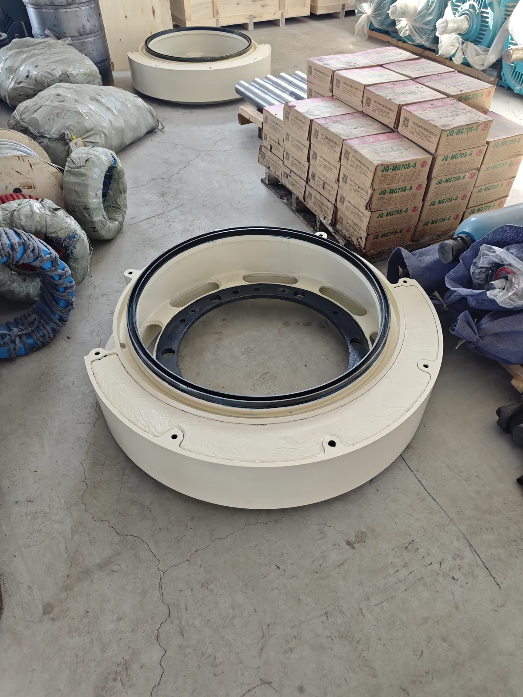
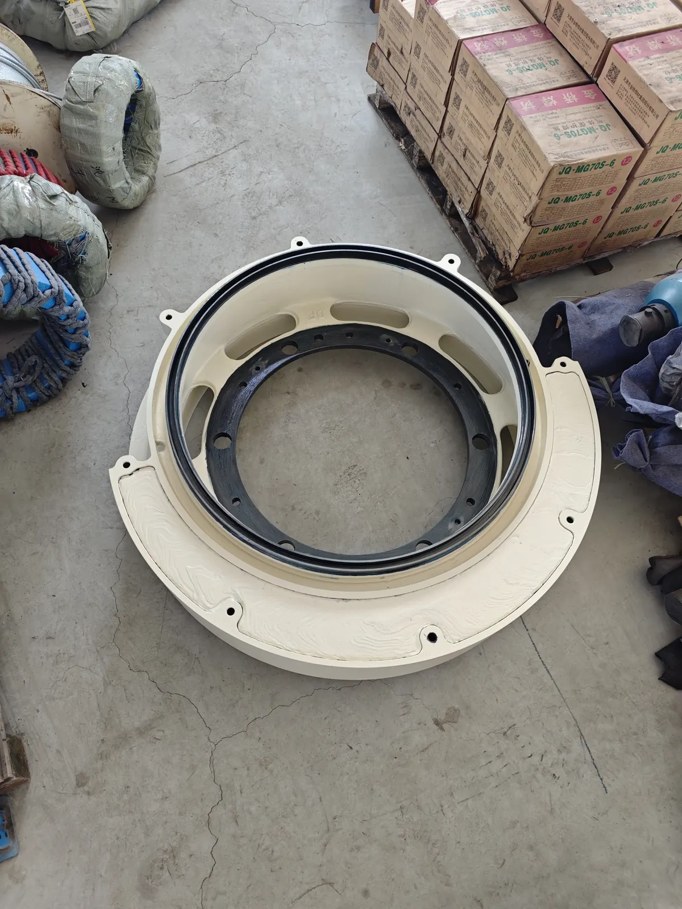
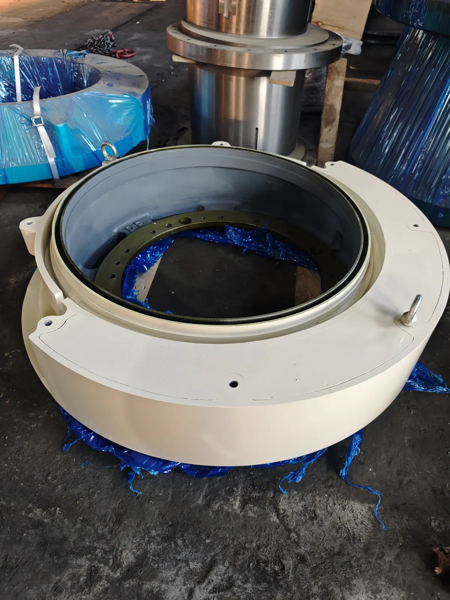
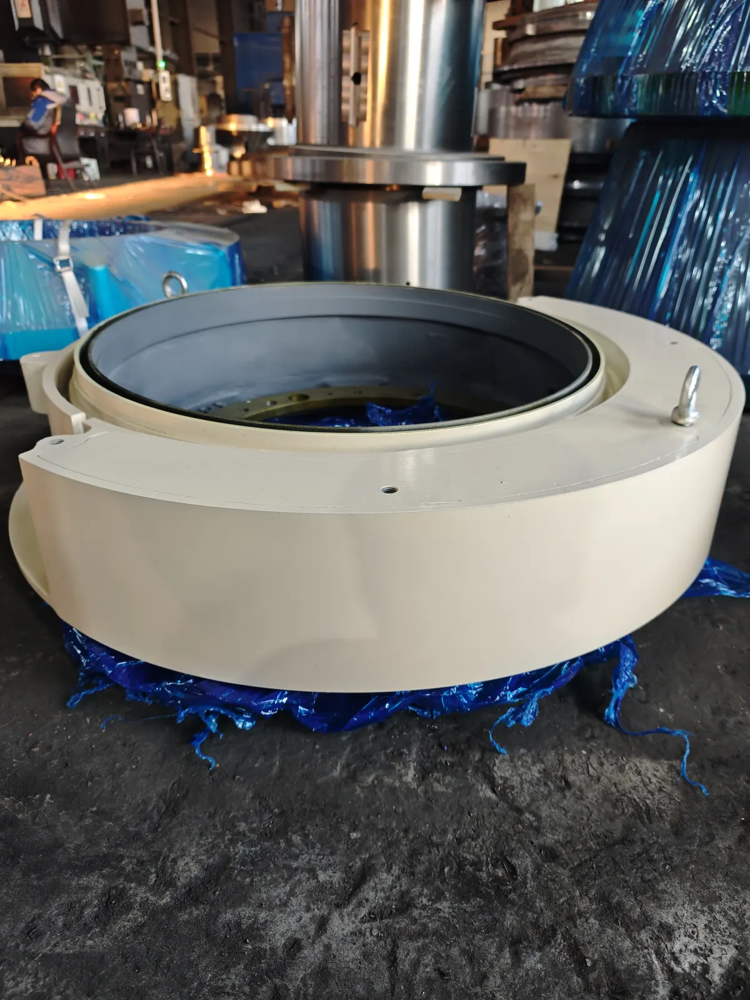

Eccentric motion balance
Counterweights help balance the cone crusher eccentric motion and keep the machine running steadily.
Cast Steel
Eccentric counterweights and related cast steel components for GP, HP and similar cone crusher applications.

Counterweights help balance the cone crusher eccentric motion and keep the machine running steadily.
Counterweights involve casting, critical-face machining, hole confirmation, painting and heavy packing. Lead poured into the groove should be calibrated repeatedly so the final weight meets the drawing requirement.
Common inquiries include GP100, GP200, GP300 and HP style cone crusher counterweights.
XCT focuses on weight verification, installation faces and export packing for heavy cast components.



Material, surface treatment and lead-weight details are reviewed according to the drawing, sample and machine application.
Quality checks focus on final weight, hole position, machined surfaces, visual casting condition, paint finish and export packing.
MOQ can start from 1 pc. Lead time depends on casting pattern, machining and calibration. Heavy components are packed for sea freight.
Brand and model names are compatibility references only. XCT Mining supplies independent aftermarket replacement parts.
Buyer FAQ
Weight, hole layout, machined faces and balance-related details must match the machine requirement, so drawings or samples are strongly preferred.
Yes. Common inquiries include GP100, GP200, GP300 and HP style cone crusher counterweights, confirmed by drawing, photos and model data.